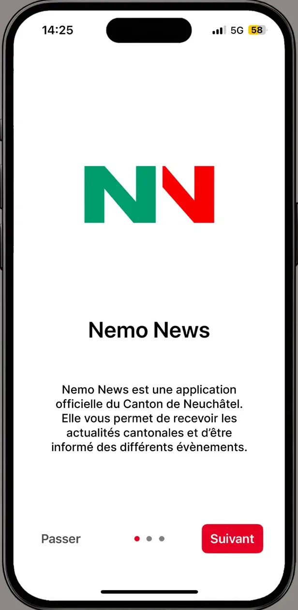
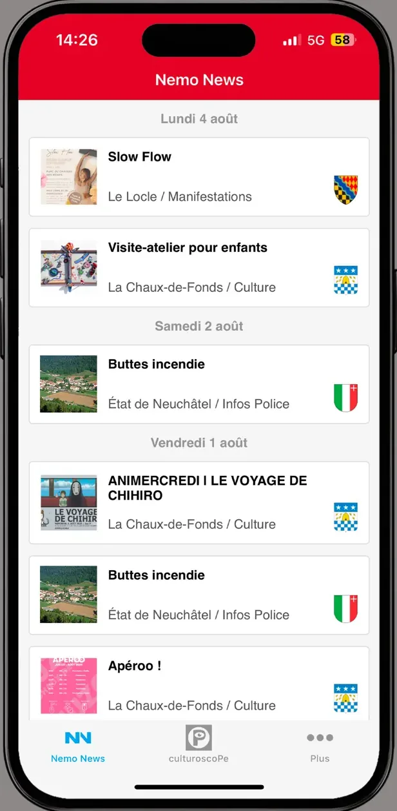
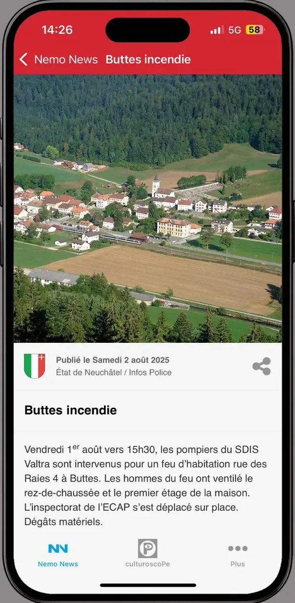
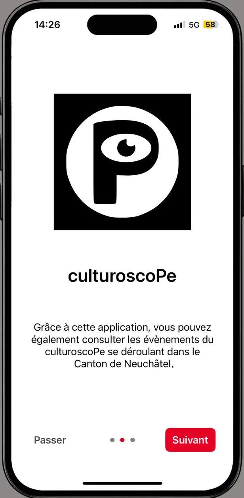

Project overview
Nemo News is the official mobile information system built by the State and City of Neuchâtel in partnership with Arcantel. The app carries news and announcements from public institutions straight to citizens' phones.
Every item names the institution publishing it — the State of Neuchâtel, the police, a municipality — and shows its coat of arms. That attribution is not decoration: in an app whose whole point is being an official source, knowing who is speaking is part of the information.




What the app brings
Nemo News gathers into one app what would otherwise mean following a dozen institutional websites: cantonal and municipal news, police information, events and the cultural agenda.
Filter by theme and publisher
Someone living in Le Locle does not have the same needs as someone in La Chaux-de-Fonds. Filtering by theme and by publishing institution lets each person narrow the feed to what concerns them, rather than imposing a single stream.
Notifications and emergency alerts
Important information goes out as a push notification, and emergency alerts have their own channel. This is the function that justifies such an app existing at all: reaching people when it matters, without depending on them visiting a website.
Location services and emergency numbers
The app offers location services and a directory of emergency numbers for the Neuchâtel region — precisely the information you look for at the moments when you have no time to look for it.
The culturoscoPe
The canton's cultural agenda is built into the app under its own tab, so institutional news and cultural life sit together without blurring into each other.
Technical work
The app is built in .NET MAUI, like GuMobile, and ships to iOS and Android from a single codebase. I maintain and extend it.
Many publishers, one feed
Content comes from distinct institutions, each with its own sections and publishing rhythm. The feed has to present them together, ordered by date, without any item losing track of where it came from.
Notifications that commit you
A notification sent by a public institution does not have the same standing as a commercial one: it has to go out, arrive, and not arrive twice. Care taken over that channel counts for more than any visible feature.
Two stores, the same content
As with GuMobile, every release goes through the App Store and the Play Console. Sharing the release tooling between the two apps avoids maintaining the same machinery twice.